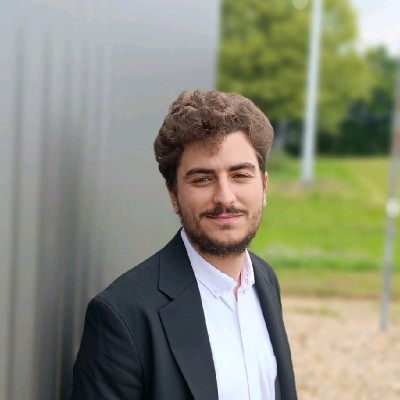

Élève ingénieur en Systèmes Numériques, IA & Nouvelles Technologies à l'UTT.
Je construis des systèmes intelligents là où l'IA rencontre l'industrie.

Ingénieur en formation à l'UTT (2025–2028), je me spécialise à l'intersection de l'intelligence artificielle et des systèmes industriels.
Avant l'UTT, j'ai obtenu un BUT GEII Automatisme à l'Université de Lorraine, complété par deux missions terrain chez ARDATEM, sur des projets critiques ArcelorMittal et AscoMetal.
Je cherche une alternance 24 mois à partir de septembre 2026, au rythme 2 sem. école / 8 sem. entreprise, dans l'industrie, la défense ou l'énergie.
Intégration et configuration de systèmes de contrôle-commande sur site sidérurgique critique. Système automatisé livré de A à Z (Schneider + interface opérateur). Guides de mise en service écrits et présentés directement aux techniciens — outil pris en main le jour même.
Déploiement et fiabilisation du système d'alertes SMS de supervision industrielle sur 5 lignes de production. Coordination avec les équipes process, optimisation de la chaîne de données temps réel.
Cliquer sur un projet pour voir l'architecture, les schémas et les résultats détaillés.
Assistant IA conçu seul pour interpréter les alertes industrielles et répondre aux questions techniques sur documentation PDF en moins de 2 secondes. Dashboard adopté par les équipes terrain.
Détection de somnolence au volant par analyse faciale temps réel. 468 points faciaux, faux positifs réduits de 35%.
Fine-tuning d'un LLM 8B pour la détection de conflits littéraires. QLoRA pour tenir sur une seule RTX A4000, dataset ~250 exemples annotés.
Système end-to-end : badge RFID → ESP32 → Firebase → React RBAC → Cloud Functions Python. Détection d'absences automatisée, notifications parents.
Comparaison rigoureuse de 6 algorithmes sur dataset clinique. Pipeline sans data leakage, EDA approfondie, imputation stratifiée. kNN k=7 meilleur modèle.
Je recherche une alternance de 24 mois à partir de septembre 2026, dans l'industrie, la défense ou l'énergie. Rythme : 2 sem. école / 8 sem. entreprise. Mobile partout en France.